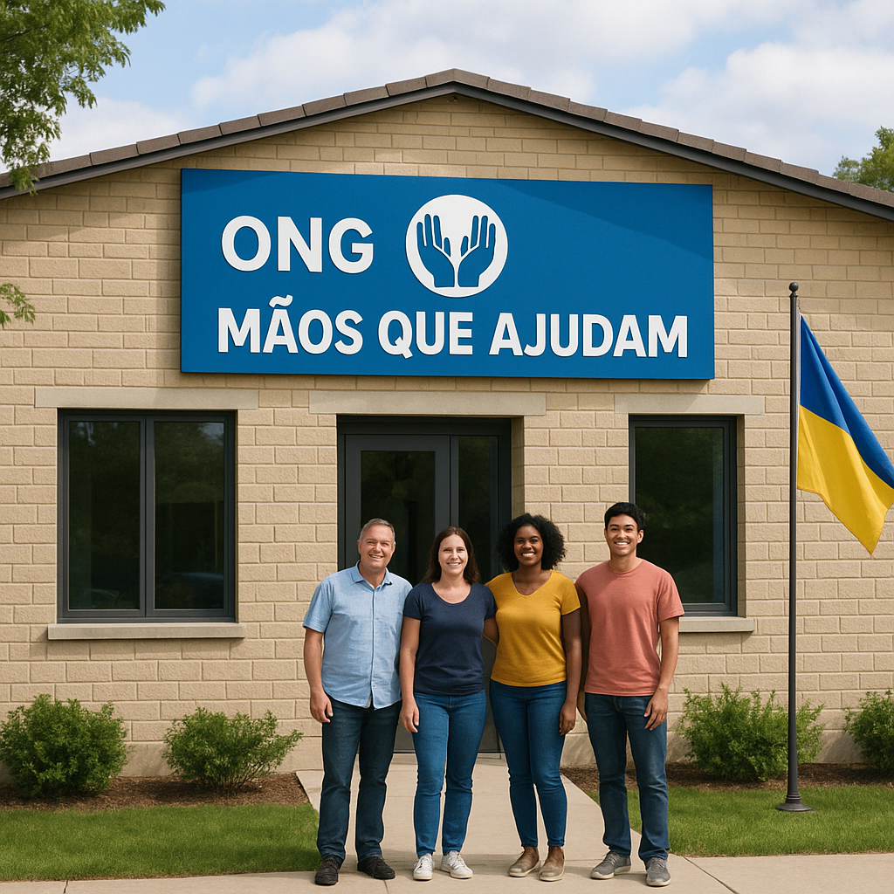

Junte-se a nós. Mude uma vida.
A "Mãos que Ajudam" é uma organização sem fins lucrativos focada em criar um impacto real e duradouro na nossa comunidade. Cada gesto conta.
Conheça os Projetos Seja VoluntárioSobre a Nossa Organização
Fundada em 2010, a "Mãos que Ajudam" nasceu do sonho de um pequeno grupo de amigos que queria fazer a diferença. Hoje, impactamos milhares de vidas através de programas de educação, alimentação e apoio a famílias carenciadas.
A nossa missão é simples: estender a mão a quem mais precisa, com respeito, dignidade e transparência. Acreditamos que a mudança começa com a ação local.

Informações de Contato
Endereço: Rua das Causas, 123, 1000-001 Lisboa
Telefone: (+351) 210 000 000
E-mail: info@maosqueajudam.pt
Horário de Atendimento: Segunda a Sexta, das 9h às 18h.